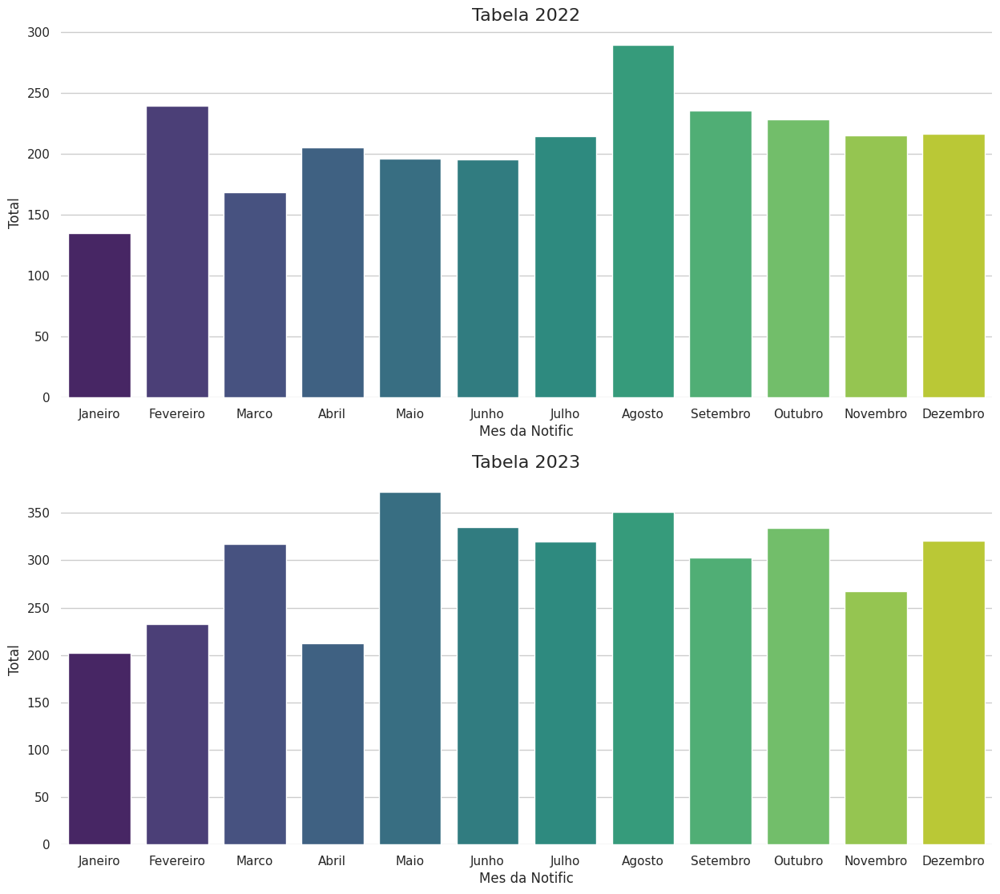
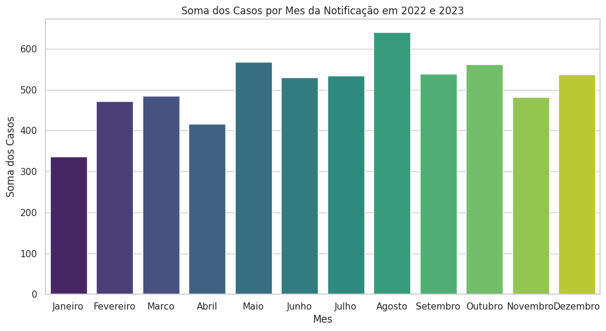
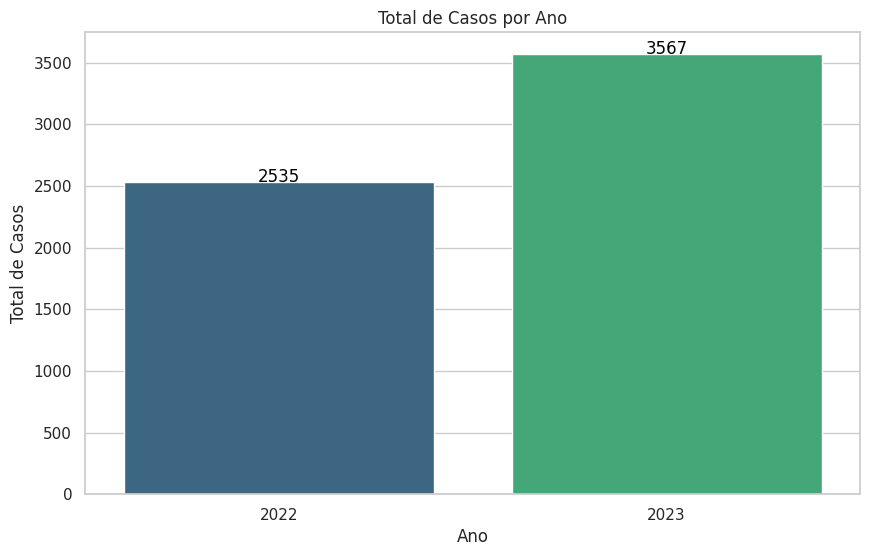

Comparação entre as tabelas de 2022 e 2023

"Gráfico de taxas de transtornos mentais dos meses registrados em 2022 e 2023 - Imagem: Autores
- A análise desses gráficos revela um padrão de aumento ao longo dos meses em ambos os anos.
- O mês com o maior número de casos notificados em 2022 foi Agosto, e o com menor número foi Janeiro.
- O mês com o maior número de casos notificados em 2023 foi Maio, e o com menor número foi Janeiro.
Comparação entre meses

Representação gráfica das taxas mensais de transtornos mentais - Imagem: Autores
- Agosto se destaca pela maior incidência de casos notificados.
- Janeiro se destaca pela menor incidência de casos notificados.
Comparação entre anos

Representação gráfica das taxas anuais de 2022 e 2023 - Imagem: Autores
- O ano de 2023 teve um aumento de 1032 casos, ou 40,71% em comparação com o ano de 2022.